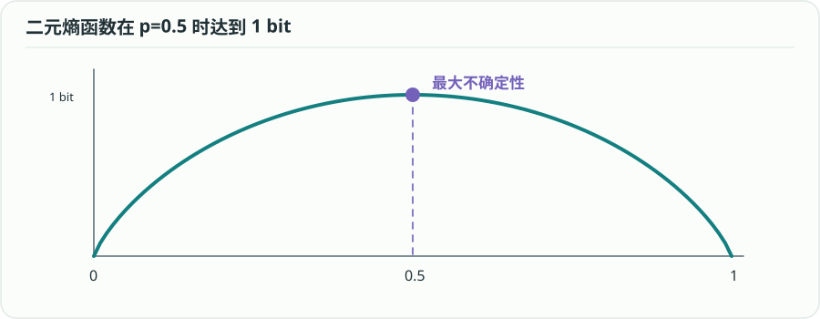

A visual course on information theory
从一个比特，
走向通信的极限。
为什么意外消息带来更多信息？噪声不可避免，为什么仍能实现可靠通信？从概率出发，逐层建立熵、编码与信道的数学直觉。
28完整章节
22已精修章节
03主题路线

LEARNING PATHS
学习路线
01—07 基础原理
概率、自信息、熵、互信息、相对熵以及典型集。
08—20 通信与编码
信源压缩、信道容量、纠错、率失真和连续信源。
21—28 应用与前沿
网络信息论、统计学习、信息瓶颈及综合项目。
CHAPTER ATLAS
完整章节地图
前十五章已深度精修；第 16–28 章保留原文，等待逐章技术审查。
第 01 章 · 精修什么是信息香农的信息定义 · 通信系统模型 · 比特的含义
第 02 章 · 精修概率论回顾随机变量 · 条件概率与贝叶斯 · Jensen不等式
第 03 章 · 精修自信息与熵自信息量 · 香农熵 · 联合熵与条件熵
第 04 章 · 精修互信息互信息定义 · 维恩图理解 · 数据处理不等式
第 05 章 · 精修KL散度与交叉熵相对熵定义 · KL不对称性 · 交叉熵损失
第 06 章 · 精修熵的性质深入极值性质 · 条件作用不增熵 · 最大熵原理
第 07 章 · 精修渐进均分性AEP典型集 · AEP定理 · 压缩理论极限
第 08 章 · 精修信源编码定理无失真编码 · Kraft不等式 · 编码效率
第 09 章 · 精修Huffman编码Huffman树构造 · 最优性证明 · 前缀码
第 10 章 · 精修算术编码区间编码 · 自适应算术编码 · 精度问题
第 11 章 · 精修字典编码LZ77/LZ78 · LZW · gzip/DEFLATE
第 12 章 · 精修离散信道信道转移矩阵 · BSC/BEC · 对称信道
第 13 章 · 精修信道容量容量公式 · BSC容量 · Blahut-Arimoto算法
第 14 章 · 精修信道编码定理Shannon第二定理 · 随机编码 · 错误指数衰减
第 15 章 · 精修线性分组码生成矩阵与校验矩阵 · 汉明码 · 标准阵列译码
第 16 章 · 原版待审循环码与CRC多项式表示 · CRC校验 · LFSR硬件实现
第 17 章 · 原版待审卷积码与Viterbi译码状态转移图 · 网格图 · Viterbi算法
第 18 章 · 原版待审信息论与安全完善保密性 · 一次一密 · Shannon保密定理
第 19 章 · 原版待审率失真理论率失真函数 · Shannon第三定理 · JPEG/MP3原理
第 20 章 · 原版待审连续信源与微分熵微分熵性质 · 最大熵分布 · 高斯信道容量
第 21 章 · 原版待审网络信息论多址信道MAC · 广播信道BC · 网络编码
第 22 章 · 原版待审信息论与统计推断Fisher信息 · Cramér-Rao界 · MDL原理
第 23 章 · 原版待审交叉熵与深度学习softmax损失 · MLE等价性 · VAE与KL正则化
第 24 章 · 原版待审信息瓶颈理论IB原则 · 信息平面 · 深度学习可解释性
第 25 章 · 原版待审信息论工具实战infomeasure库 · MI估计方法 · KSG估计器
第 26 章 · 原版待审语义信息论语义熵 · 同义映射 · 6G语义通信
第 27 章 · 原版待审信息论前沿量子信息论 · 传递熵与因果 · 部分信息分解
第 28 章 · 原版待审综合项目端到端通信系统 · 压缩算法对比 · 可视化工具开发